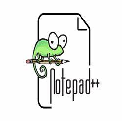

Notepad++ é um editor de texto e de código fonte de código aberto sob a licença GPL. Suporta várias linguagens de programação rodando sob o sistema Microsoft Windows (possível utilização no Linux via Wine). O Notepad++ é distribuído como um Software livre. O projeto foi hospedado no SourceForge.net, onde foi baixado mais de 27 milhões de vezes e ganhou duas vezes o prêmio "SourceForge Community Choice Award" por melhor ferramenta de desenvolvimento. O projeto foi hospedado no TuxFamily desde 2010 até 2015 depois foi movido para o GitHub. Ele é baseado no Scintilla, é escrito em C++ utilizando a API Win32 e usa a STL. O objetivo do Notepad++ é oferecer um esguio e eficiente binário com uma interface gráfica totalmente modificável. As linguagens de programação suportadas pelo Notepad++ são: C, C++, Java, C#, XML, HTML, PHP, JavaScript, makefile, ASCII art, doxygen, ASP, VB/VBScript, Unix Shell Script, BAT, SQL, Objective-C, CSS, Pascal, Perl, Python, Lua, Tcl, Assembly, Ruby, Lisp, Scheme, Smalltalk, PostScript e VHDL. Além disto, usuários podem definir suas próprias linguagens usando um "sistema de definição de linguagem" integrado, que faz do Notepad++ extensível, para ter realce de sintaxe e compactação de trechos de código. Ele suporta autocomplemento, busca e substituição com integração de expressões regulares, divisão de tela, zoom, favoritos, etc. Tem suporte para macros e plugins. Um plugin de usuário chamado TextFX, que provê opções de transformação de textos, é incluído por padrão.
 pagina inicial